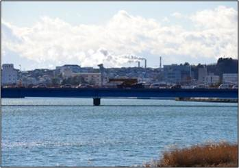

G-Matrixは、放送局からIP伝送路で伝送される映像ストリーミングデータの方路の変更や同報配信など、「Ｎ対１」「１対Ｎ」「Ｎ対Ｍ」配信を行う映像信号ストリーミングスイッチです。
- 高速・大容量対応配信に対応
- 1台当たり1.5Gbpsの映像配信処理能力
- 様々な映像ソリューションにシステム連携
- 顔認証、画像解析等
G-Matrixの5つの特徴
- Point１.
- 大容量スイッチング性能最大2.4G
- Point２.
- SD、HD、圧縮、非圧縮の映像ストリーミングに対応
- Point３.
- 高信頼のクラスタリング構成
- Point４.
- 運用コンソールにより系切替実施、運用計画立案
- Point５.
- 録 画 配 信
導入事例
国際宇宙ステーション「きぼう」実験棟映像中継

某河川監視
ボートレース中継
従来システムの課題をG-Matrixが解決します。
G-Matrixの主要機能
 1.ライブ(実況中継)－G-Matrix Live－
1.ライブ(実況中継)－G-Matrix Live－
カメラで写した映像を、受像機に対して実況中継します。
入力256ch、出力256ch以上のライブ中継に対応しています。
2.録画－G-Matrix Recorder－
実況中継している映像を、サーバへ録画できます。
入力画像の自動録画、自動ライブラリ機能があります。
3.VOD (ビデオオンデマンド) －G-Matrix VOD－
リクエストに応じて、蓄積した映像の配信を行います。
保管画像のオンデマンド視聴が可能です。
 4.MCU(Multi-point Control Unit)
4.MCU(Multi-point Control Unit)
多地点に設置されたカメラの映像をマルチ画面でディスプレイに表示します。
5.マルチデバイス対応
スマート、タブレット、PC、IPカメラ等、様々なIPデバイスに対応しています。
G-Matrix活用のシナリオ
このほか、遠隔会議、 スポーツ中継、 デジタルサイネージ、 コールセンター（ショッピング） 、教育コールセンター（医療・介護分野）等、様々なシーンに対応できます。
G-Matrixに関するお問い合わせ
 フォームからのお問い合わせ フォームからのお問い合わせ |